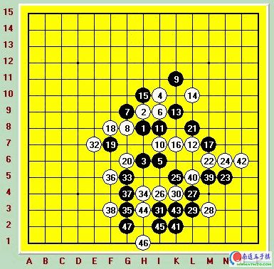

黑：吴镝
白：梅凡
黑胜
梅凡这名棋手下棋非常的早，早在2001年就和我在联众经常下棋，他对定式的研究有自己的独到之处。我和他第一次比赛交手是在2002年的北京公开赛上。当时他很轻易的击败了我~确实非常的有实力。不过从03年之后他的棋似乎到了一个瓶颈，几年都没感觉到什么进步。而且下棋越来越猥琐了，经常走一些花俏的下法，实战成绩每况愈下，这盘对局就是他风格的一个缩影~
实战我开局，因为和米兰（梅凡的网名）很熟悉，知道他对优势局的研究还是很不错，所以开局很正常开的瑞星。白12是最近几年瑞星开局最流行的变化，目前来说结论是黑先手领导全盘最终和棋。12-20正常变化，21我没有走更激烈的变化，选择了破坏白的形状，期待在以下的中盘较量中慢慢的积累优势。以下正常，25试应手，其实这手并不好。后来得到的结论是白可以迅速抢先并利用优势取胜。不过米兰同学这里并没有很激烈的向我发起进攻，大概是怕局面太复杂自己掌握不住吧。26非常稳健的下法，压缩黑向右下角落靠拢，26后我思考了下9-13这个活二的借用，发现假如现在O6这个点有颗黑子的话黑会有一套借用到M9的VCT。这无疑给了我一个进攻的方向。27.29拓展棋型其实目的很简单，想白棋继续压迫黑棋而从容得到O6这个点。这时让我很郁闷的一件事情发生了，白的30无疑是没有发现O6后的那套VCT，但很巧合的是白30会在黑最后VCT的过程中形成一套反从而防住。当时非常的感慨，米兰同学确实厉害，可以针对黑棋的杀设计出这么有深度的防守点，不过在比赛后我请教这手白30的时候米兰同学很无所谓的告诉我因为我在L5存在一个三三禁点，所以做个活二要抓我~我又请教了下是否看到O6那里的借用，米兰同学很奇怪的望着我，问我那里有什么东西，当时我想吐血三升，这丫运气太好了。
由于白30的存在黑在这个局部再也不可能出现什么绝妙的进攻了，取胜似乎在一瞬间远离了我。平静了下郁闷的心情我走出了31准备利用这里残留的一点材料向左边过渡，更希望可以过渡到左上，毕竟那里还是很开阔的。32米兰同学再次走出极富有大局观的一手，他看出我的目的并且非常凶狠的直接把我向左上过渡的希望给扑灭了。下到这里我觉得眼前一黑，面对这样有层次有深度的防守相信任何一名进攻型棋手都是很郁闷的。33很无奈希望借用下面黑这点材料来逼迫白棋防守，之后再直接到上面进行防守争取和棋。34必然，35可说是我这盘比较漂亮的一手了，利用跳眠三把局面打开了点，不过这种程度的打开只是在下面这个狭小的地带，依然不能取胜的。米兰同学经过长考再次走出强手。36把我这里的那么点东西盖的严严实实，黑再次进入了痛苦的境地，37非常无奈，只有G4这里可以继续做杀并且防守白棋。现在白只要在K3或者H3防一手那黑将彻底的到上面进行防守。这样的小小骗招我根本没想过米兰同学会发现不了，怀着郁闷的心理我开始在上面寻找防守点。就在这时米兰同学非常自信的拿起棋子轻快的落在了F3并且开始东张西望的看起了旁边人的对局。我使劲揉了下眼睛，没错，又揉了下还是没错。米兰同学前面的防守那么有深度有层次，怎么会在这种小地方出错误呢。这一定是在考验我，我又算了几遍，是没错啊就那么几手我想随便拉个5级的来都能算清楚吧。于是我轻声的问米兰同学是否悔棋，米兰同学笑了笑告诉我比赛哪里能悔棋呢~看到他自信的样子我真的不想打击他，不过面对胜利我也不会手软。39-47简单的VCT后米兰同学突然静了下来，好象巍峨的雪山沉静而安详~片刻后他举起了手喊来了裁判投子认负，之后很快的离开了赛场。看到他这样我的心情也不好受，多好的一盘棋啊，怎么会突然就结束了呢，让我至今意犹未尽~
米兰,男,第五届浙江五子棋邀请赛第一名.
吴大哥说的没错，这么有意思的东西就这样没了。真应该把米兰叫回来继续玩，。。
这也就是五子棋的魅力之处吧